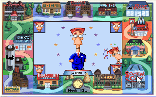

Алтернативен линк за изиграване на играта (след което спазвате инструкциите по-долу):
https://jonesinthefastlane.com/
Ако играете играта самостоятелно за наваксване на пропуснати точки от клас:
1) Запознайте се с ръководството тук...
2) Стартирате играта с възможно най-ниската сложност на целите - ако искате да играете с по-сложни цели, имате възможност да го направите по ваш избор
3) Изигравате играта и сваляте скрийншот (може да стане с дясно копче на мишката върху играта и Save image as...), от който да се вижда че сте "Winner" и се вижда в коя седмица се е случило. Записвате файла със скрийншота във вид на изображение (jpg, gif, bmp, пр.) и наименовате файла във вид факултетен_номер_име_фамилия_игра_ниво на латиница. (Например: 15164032_ivan_ivanov_jones.jpg).
Примерен скрийншот:

4) Изпратете скрийншота, като попълните формуляра на следния линк: https://forms.gle/r8fWSkugKQ6zNoku5 (ако пратите по някакъв друг начин, НЯМА ДА ВИ БЪДЕ ОТЧЕТЕН РЕЗУЛТАТ).